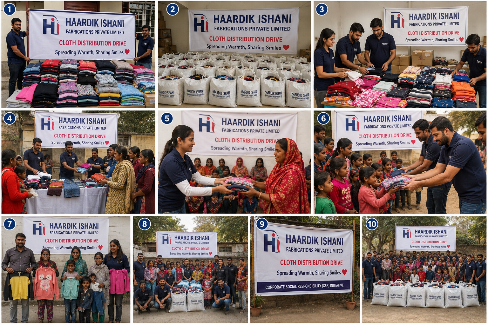

About Us
Haardik Ishani Fabrications Private Limited is an active private limited company incorporated in New Delhi on 29 July 2019, registered with the Registrar of Companies, Delhi (CIN: U18209DL2019PTC353181). We operate in the textile and fabric manufacturing space, and beyond production, we take our responsibility to the community seriously — running cloth distribution drives to spread warmth and share smiles with those who need it most.
Our Focus Areas
Textile & Fabric Manufacturing
Manufacturing fabric and textile products with an emphasis on quality and consistency.
Corporate Social Responsibility
Supporting local communities through cloth distribution drives and other CSR initiatives — spreading warmth, sharing smiles.
Registered & Compliant
An active, ROC-registered private limited company with GST and LEI registration, operating since 2019.
Gallery

Get Involved
Interested in working with us or learning more about our community initiatives? Get in touch.